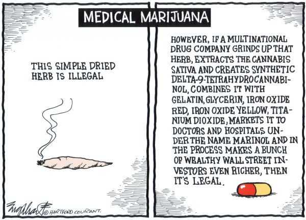
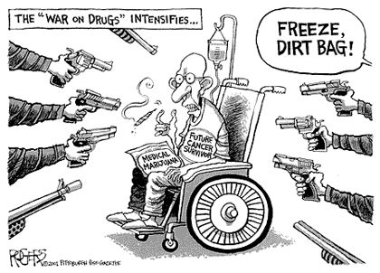
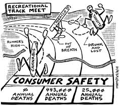

As a result of criminalization, a very valuable resource has been taken away from the American agricultural sector. It would allow for otherwise limited farmland to turn significantly improved profit margins for the farmer. Hemp, although not marijuana but illegal for similar reasons, has also been shown to a much more efficient way to make things such as rope, or paper and is much more sustainable and renewable compared to trees. 1

Medical marijuana has also been hampered as a result of it's current status. Many pills or treatments that have a huge array of side effects are perfectly legal even though they have a huge amount of various chemcials in them. Medical marijuana could not only be cheaper, since it's not associated with a brand name, but also could be less side effect heavy than traditional medicines and as comedian Katt Williams puts it: "That's the side effects: hungry, happy sleepy. That's it!" 2

When the war on drugs started, all use of marijuana was quickly demonized, recreational or medical. As a result, the lacking medical research into the possibilities of marijuana causes future treatments for serious diseases, like cancer, are limited and only hurts both the consumer and the patient who needs the substance to survive. 3

When it comes down to the simplest of facts, marijuana has not directly been responsible for one recorded death. Compared to other substances, like cigarettes which cause cancer and a whole slew of other problems, or alcohol which can cause to liver and kidney failure and many more permanent affects on day to day life, marijuana is nowhere near as dangerous. However, one is illegal and the others are sold at just about every gas station. 4